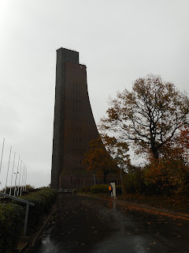
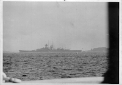
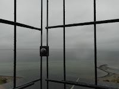
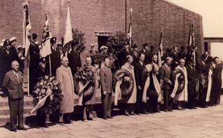
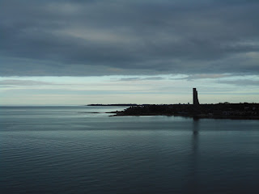
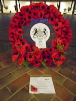

 |
| The German naval memorial Laboe, Kieler Fjord |
{kind=link}
{kind=link}
 |
| The battleship Gneisenau at anchor. As soon as he returned home, George sent this photo to Naval Intelligence |
They moored briefly at Laboe to clear customs. Germany's great naval memorial towered over them. At 72m high it’s visible
for miles. George thought its shape was that of a rudder: when Francis and I
visited last week I wondered if it was intended as a sail running up against a mast. Other
people have seen it
as the stem of a Viking ship or the conning tower of a submarine. We were there on a grey day and the idea of a crematorium
chimney also unfortunately presented itself. This would certainly have distressed the
designer, Gustav Munzer, who had won the
competition organised by the German Navy League in 1926. Munzer had begun his career
as a bricklayer and stonecutter, then trained at the vocational arts school in
Dusseldorf. Many students from such schools continued their training in the Bauhaus
colleges but Munzer went directly into industrial planning. During the 1920s he was
in Holland designing shipyards. He stated that he intended no specific reference – merely a shape that would suggest positive feelings. Hitler –
of all people – described the Laboe Memorial as ‘an unparalleled item of
kitsch’. He was wrong. There may be kitsch in some of the individual
tributes and inscriptions inside the memorial but the thing itself is stark. It's also challenging and has prompted reinterpretation.{kind=link}
 |
| Looking out to the Baltic on a grey day |
{kind=link}
Looking up from the deck of Naromis, in August 1939, George assumed the memorial was intended as a simple commemoration of the dead of 1914-1918,
something analogous to the Whitehall Cenotaph, perhaps. The central symbol of
the Cenotaph is its empty tomb -- acknowledging that the bodies of the Great War were not repatriated. The Laboe Memorial recognises that for most sailors, the sea is their only grave. Wilhelm
Lammertz, a former Chief Petty officer in the Kaiserlich Marine, and active in
the German Naval League, first suggested a memorial as a focal point for
national mourning. But whereas the Whitehall Cenotaph was government-organised and funded, the authorities in Germany were not interested and the Laboe memorial was financed from voluntary contributions. The aftermath of defeat was bitter. When the long process of construction began in 1927, Admiral Scheer, former commander of the High Seas Fleet at the 1916 Battle of Jutland, offered this initial dedication:
FUR DEUTSCHE
SEEMANSEHR
(To German Seamen’s Honour)
FUR DEUTSCHLANDS
SCHWIMMENDE WEHR
(To Germany’s Floating
Arms)
FUR BEIDER WIEDERKEHR
(May Both Return)
In 1936, with the National Socialist party was firmly in
power and naval rearmament in full swing, the memorial briefly became a political
symbol. A formal dedication ceremony took place on the twentieth anniversary of the Battle of Jutland, May 30th 1936. Commander in Chief of the Kriegsmarine
Admiral Raeder made the speech, supported by Hitler (who disliked the place and
never returned) together with the War Minister Feldmarschall von Blomberg;
Admiral Albrecht, Commanding Admiral Baltic and Kapitan zur see Mewis, the
Naval Commander at Kiel. The message was power and resurgence, not remembrance.
{kind=link}
In 1945 Laboe was in the British area of occupation. While many memorials and public symbols were obliterated
as part of the denazification process,
the Laboe memorial was embargoed but not destroyed. On May 30th 1954 it was handed back to the
German Naval Association as part of the rehabilitation of West Germany and publically rededicated. The dedication was voiced by former U-Boat
Commander, Otto Kretschmer, but this time the local dignitaries were joined by representatives of the American, British and Italian Navies. The message was a commemoration
for all the German dead – and also their opponents.
DEM GEDAENKEN ALLER
TOTEN DEUTSCHEN SAEFAHRER
(In commemoration for all dead German seamen)
BEIDER WEITKRIEGE UND
UNSERER TOTEN GEGNER
(And of our dead adversaries)
 |
| The architect Professor Munzer was there with Otto Kretschmer. Lt-Cmdr Ramsey represented the UK, Commodore |Moore the US and Capitano di Rocco from Italy |
{kind=link}
From this time West Germany was allowed to rebuild a small
navy and in 1955 it became a member of NATO. Over the border in East Germany
another new navy developed as part of the Warsaw Pact. The main role for the East German navy however was to patrol the borders
of the Baltic States and capture potential escapees. Finally the Cold War ended and, on November 9th 1989 the frontiers were opened and the barriers between East and West Germany came down. Thirty years ago.
November 9th is a significant day in German history. It's known as the Schicksalstag, the Day of Fate. November 9th 1918 was the day that the Kaiser's abdication was announced and the Weimar republic created. The Nazis made their first bid for power at the Munich Beer Hall Putsch on November 9th 1923. Then, on November 9th 1938, came Kristallnacht. That's a memory of destruction which nothing can expunge, yet the fall of the Berlin Wall at least uses destruction as a positive force.
In 1996 the meaning of the Laboe memorial was positively reinterpreted once again. Its
current (and final?) dedication reads:
GEDENKSTATTE FUR DIE
AUF SEE GEBLIESENTN ALLER NATIONEN
(Memorial for all those who died at sea,
and)
MAHNMAL FUR EINE
FRIEDLICHE SEEFAHRT AUF ALLEN MEEREN
(for peaceful navigation in free waters)
 |
| The Laboe Memorial in the evening light November 3rd 2019 |
{kind=link}
Warships of all nations dip their flags as they pass by.
 |
| A wreath from the British Government in the underground chamber at the Laboe memorial |
{kind=link}